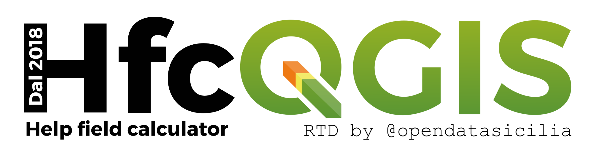
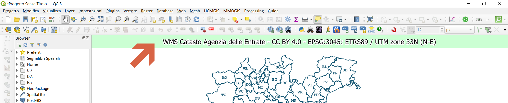
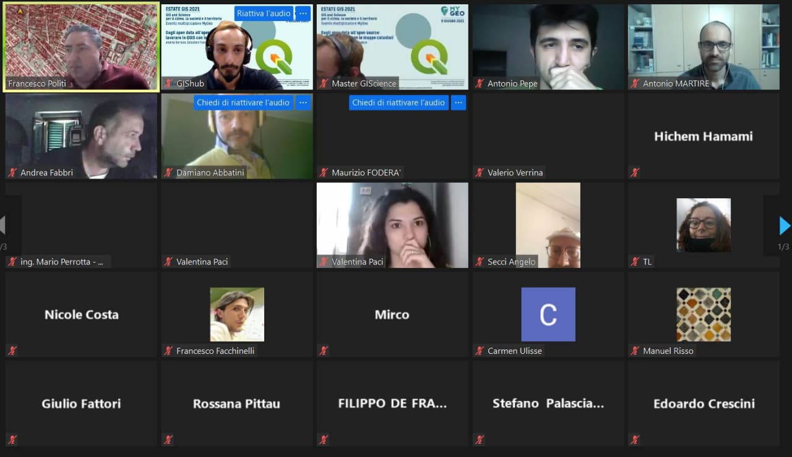
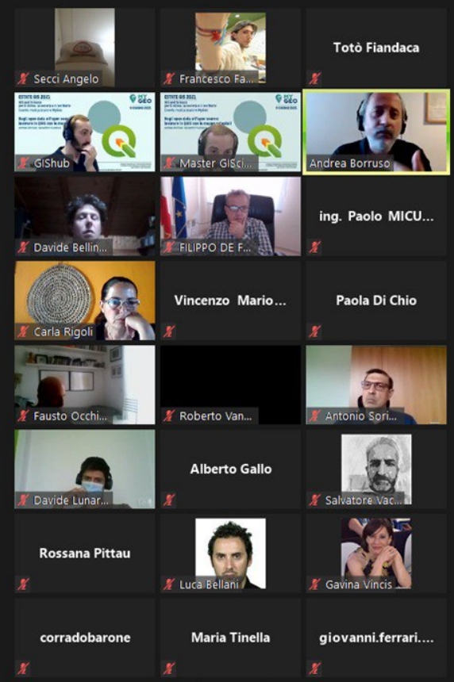
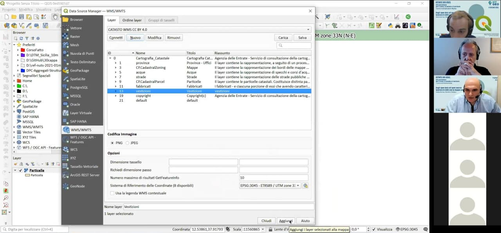

Dagli OpenData all’OpenSource: Lavorare in QGIG con le mappe catastali
Obiettivo di questo workshop è quello di evidenziare le potenzialità delle analisi geografiche usando opendata e software Open Source. Realizzeremo un progetto QGIS utilizzando, come fonte dei dati, il WMS dell'AdE e vedremo come aggiungere il servizio WMS, come estrarre i dati esposti usando il filed calc, e infine come digitalizzare velocemente le particelle catastali usando vari plugin.
Autore: Salvatore Fiandaca
Sito web: https://github.com/pigreco/workshop-estate-gis-2021/#piattaforme-e-software
Repo: https://github.com/pigreco/workshop-estate-gis-2021/
by @opendatasicilia grazie Gianni | Licenza CC-BY-SA-4.0

Dagli OpenData all’OpenSource ‚ܵ
Lavorare in QGIG con le mappe catastali ↵
Dagli OpenData all’OpenSource: Lavorare in QGIG con le mappe catastali↵
Per domande clicca su PARTECIPA:
WMS AdE↵
Il WMS del catasto dell'Agenzia delle Entrate: licenza, come usarlo in QGIS, come aggiungere il servizio WMS, come estrarre i dati e digitalizzare le particelle.
DESCRIZIONE:
Obiettivo di questo workshop è quello di evidenziare le potenzialità delle analisi geografiche usando opendata e software Open Source. Realizzeremo un progetto QGIS utilizzando, come fonte dei dati, il WMS dell'AdE e vedremo come aggiungere il servizio WMS, come estrarre i dati esposti usando il filed calc, e infine come digitalizzare velocemente le particelle catastali usando vari plugin.


Relatori↵
- üßî Andrea BORRUSO
(Membro OpenDataSicilia (2014), Presidente onData (2015))
- ü뮂Äçü¶≤ Tot√≤ FIANDACA
(Membro OpenDataSicilia (2014) , Membro QGIS Italia (2015), Socio GFOSS.it (2017), Membro QGIS organization (2020))
Data, luogo e durata↵
- üóì 09/06/2021 con orario üïü 17:30 üï¢ 19:30
- üåê on-line
- ⏳ 2️⃣ ore
Piattaforme e Software↵
- ZOOM - per diretta web
- Windows 10 64b - come SO
QGIS 3.16 Hannover e Plugin
e Plugin Gimp Selection featuree
Magic Wand- GIMP 2.10

Programma↵
- Presentazione iniziale da parte degli organizzatori;
- Andrea Borruso:
- introduzione agli opendata;
- il WMS del Catasto dell'AdE: la licenza prima e dopo del 24/09/2020;
- cosa possiamo farci con il WMS: con QGIS o via script;
- Totò Fiandaca:
- come aggiungere il WMS del catasto AdE in QGIS;
- come usarle il WMS come layer;
- quali layer sono presenti nel WMS e a quale scala sono visibili;
- quali SR sono disponibili nel WMS;
- come fare una semplice interrogare del WMS in QGIS;
- quali dati espone il WMS;
- come estrarre i dati esposti dal WMS;
- come creare/usare espressioni personalizzate;
- come digitalizzare le particelle in modo veloce;
- quali plugin usare per estrarre le particelle;
- come fare una semplice interrogare del WMS in QGIS;

QGIS e il WMS AdE↵

Link utili↵
- URL servizio WMS : https://wms.cartografia.agenziaentrate.gov.it/inspire/wms/ows01.php
- PDF su WMS : https://www.agenziaentrate.gov.it/portale/documents/20143/260417/Manuale+consultazione+cartografia_Documentazione+descrittiva+del+servizio+di+consultazione+della+cartografia+catastale+20180611.pdf/35e955f7-2344-56c8-1157-8f7567531660
- Capabilities : https://wms.cartografia.agenziaentrate.gov.it/inspire/wms/ows01.php?SERVICE=WMS&VERSION=1.3.0&REQUEST=GetCapabilities
- Pagina con URL e licenza : https://www.agenziaentrate.gov.it/portale/web/guest/schede/fabbricatiterreni/consultazione-cartografia-catastale/servizio-consultazione-cartografia
- espressione personalizzata: https://gist.github.com/pigreco/86589dddf5a59b3a7650267d5af237bd
Decorazione Etichetta Titolo↵
Creare un nuovo progetto QGIS e aggiungere Decorazione Titolo
Espressione utilizzata↵
espressione utilizzata: (Menu: Visualizza | Decorazioni | Etichetta Titolo ...)
WMS Catasto Agenzia delle Entrate - CC BY 4.0 - [% @map_crs ||': '|| @map_crs_description %]


Servizio WMS↵
Come aggiungere il Servizio WMS a QGIS↵
- URL:
https://wms.cartografia.agenziaentrate.gov.it/inspire/wms/ows01.php - Gestione delle Sorgentidati | WMS/WMTS | Nuovo :

Quali dati espone il servizio WMS↵
- codice Belfiore;
- foglio;
- particella;
- sezione;
- allegato;
- sviluppo
SR disponibili per il WMS↵
Il servizio rende consultabili i dati nel Sistema di riferimento geodetico nazionale (Decreto 10 novembre 2011) costituito dalla realizzazione ETRF2000 - all'epoca 2008.0 - del Sistema di riferimento geodetico europeo ETRS89, identificativo EPSG3:6706.
Ai soli fini di una migliore fruibilità del servizio in ambito INSPIRE, sono disponibili i Sistemi di riferimento relativi alla realizzazione ETRF89 (codici EPSG 4258, 25832, 25833, 25834, 3044, 3045, 3046).
- Capabitilis : https://wms.cartografia.agenziaentrate.gov.it/inspire/wms/ows01.php?SERVICE=WMS&VERSION=1.3.0&REQUEST=GetCapabilities
- copiate il link di sopra e incollatelo in un browser, poi cercate EPSG, troverete una lista di EPSG utilizzabili.
- Codici Comuni : https://www1.agenziaentrate.gov.it/servizi/codici/ricerca/VisualizzaTabella.php?ArcName=COM-ICI
| map_crs | map_crs_description | Area of fuse | Unit |
|---|---|---|---|
| EPSG:6706 | RDN2008 | Italy - onshore and offshore | degree |
| EPSG:4258 | ETRS89 | Europe - onshore and offshore | degree |
| EPSG:3044 | ETRS89 / UTM zone 32N (N-E) | Europe between 06°E and 12°E | metre |
| EPSG:3045 | ETRS89 / UTM zone 33N (N-E) | Europe between 12°E and 18°E | metre |
| EPSG:3046 | ETRS89 / UTM zone 34N (N-E) | Europe between 18°E and 24°E | metre |
| EPSG:25832 | ETRS89 / UTM zone 32N | Europe between 06°E and 12°E | metre |
| EPSG:25833 | ETRS89 / UTM zone 33N | Europe between 12°E and 18°E | metre |
| EPSG:25834 | ETRS89 / UTM zone 34N | Europe between 18°E and 24°E | metre |
Layer disponibili nel WMS↵
| nome | Titolo | Scala visualizzazione | GetFeatureInfo |
|---|---|---|---|
| province | Province - Uffici | 1:50.000 | n.d. |
| CP.CadastralZoning | Mappe | 1:200.000 | Campi previsti dalla Direttiva INSPIRE |
| acque | Acque | 1:40.000 | n.d. |
| strade | Strade | 1:40.000 | n.d. |
| CP.CadastralParcel | Particelle | 1:5.000 | Campi previsti dalla Direttiva INSPIRE |
| fabbricati | Fabbricati | 1:5.000 | n.d. |
| vestizione | Vestizione | 1:2.000 | n.d. |
| copyright | Copyright© |
Creare un nuovo GeoPackage↵
- Per chi volesse avere tutto pronto, scarica geopackage con progetto (posizionato in Sicilia)
Per creare velocemente un nuovo GeoPackage, digitare Ctrl+Shift+N, altrimenti dal Menu | Crea Vettore | Nuovo Layer GeoPackage
- definire il percorso e nome del GeoPackage;
- definire il nome della tabella (
catasto); - definire il Tipo di geometria (in questo esempio
Punto); - selezionare EPSG del Progetto (che deve essere EPSG del WMS Catasto);
- pigiare su
OK
NB: il GeoPackage creerà automaticamente il campo fid, tutti gli altri campi che ci serviranno saranno campi virtuali (vedi sotto)
Impostazioni Progetto↵
- definire l'area in cui lavorare (es: un comune);
- in funzione dell'area, definire EPSG del WMS (proiettato e non geografico);
- installare la funzione personalizzata;
- caricare il geopackage appena creato;
- aggiungere il layer WMS Catasto (vedi punto 2) e selezionare i layer:
- Particelle;
- vestizione;
- copyright
- occhio alla scala di visualizzazione del layer;
Espressione personalizzata↵
Questa espressione personalizzata permette di estrarre i dati esposti dal WMS Catasto
# -*- coding: utf-8 -*-
"""
/***************************************************************************
WMS Catasto Agenzia delle Entrate CC BY 4.0
-------------------
copyright : (C) 2020 by Giulio Fattori
email : xxxxxxx.xxxxxx@xxx.it
***************************************************************************/
"""
from qgis.core import *
from qgis.gui import *
import requests
@qgsfunction(args='auto', group='Custom')
def get_parcel_info2(xx, yy, EPSG, feature, parent):
"""
<h1>WMS Catasto Agenzia delle Entrate CC BY 4.0:</h1><br>
La funzione, tramite una richiesta GetFeatureInfo, restituisce le informazioni utili sulla particella che ricade sotto il pixel di mio interesse:
<h2>Esempio:</h2>
<ul>
<li>get_parcel_info2(355461.5,4222490.7,'EPSG:3045') -> 'IT.AGE.PLA.G273_0033A0.673'</li>
<li>get_parcel_info2("fieldX", "fieldY",'EPSG:3045') -> 'IT.AGE.PLA.G273_0033A0.673'</li>
<li>get_parcel_info2("fieldX", "fieldY",@project_crs) -> 'IT.AGE.PLA.G273_0033A0.673'</li>
</ul>
<h2>NB: le coordinate X e Y devono essere espresse nel EPSG utilizzato (gli EPSG disponibili sono:25832/3/4,3044/5/6)</h2>
"""
req = "https://wms.cartografia.agenziaentrate.gov.it/inspire/wms/ows01.php?REQUEST=GetFeatureInfo&SERVICE=WMS&SRS="+EPSG+"&STYLES=&VERSION=1.1&FORMAT=image/png&BBOX="+str(xx-1)+","+str(yy-1)+","+str(xx+1)+","+str(yy+1)+"&HEIGHT=9&WIDTH=9&LAYERS=CP.CadastralParcel&QUERY_LAYERS=CP.CadastralParcel&INFO_FORMAT=text/html&X=5&Y=5"
r = requests.get(req, auth=('user', 'pass'))
a = r.text.partition("InspireId localId</th><td>")[2]
b = a.partition("</td>")[0]
return b
file da salvare nella cartella del profilo corrente: C:\Users\nomeUtente\AppData\Roaming\QGIS\QGIS3\profiles\default\python\expressions
raggiungibile da : Menu | Impostazioni | Profilo utente | Apri la cartella del profilo attivo

la funzione personalizzata nel Gruppo Custom del field calc:

campi virtuali↵
sotto le espressioni utilizzate nei campi virtuali (i campi virtuali permettono di creare un layer con i campi popolati da espressioni)
Creare un vettore puntuale, per esempio in un GeoPackage e definire solo il campo fid, gli altri campi li definiamo come campi virtuali, ecco le definizioni:
| nome campo | tipo campo | espressione | descrizione |
|---|---|---|---|
| fid | automatico | - | generato dal GeoPackage |
| x | virtuale | $x |
coordinata x del punto |
| y | virtuale | $y |
coordinata y del punto |
| catasto | virtuale | get_parcel_info2("x","y") |
funzione personalizzata |
| codice | virtuale | regexp_replace("catasto",'^(.+)\\.(.+)\\.(.+)\\.(.+)_(.+)\\.(.+)$','\\4') |
estrazione codice Belfiore |
| foglio | virtuale | regexp_replace("catasto",'^(.+)\\.(.+)\\.(.+)\\.(.+)_(.+)\\.(.+)$','\\5') |
nro foglio |
| particella | virtuale | regexp_replace("catasto",'^(.+)\\.(.+)\\.(.+)\\.(.+)_(.+)\\.(.+)$','\\6') |
nro particella |
casi possibili↵
vedi: Note sulla codifica dell’output della query al WMS dell’Agenzia delle Entrate presenti in questo ottimo blog post di Andrea Borruso
IT.AGE.PLA.G273_011800.485caso senza sezioneIT.AGE.PLA.B354A0018V0.2261caso con sezione
Alcuni comuni presentano delle sezioni e quindi la stringa estratta da get_parcel_info2() puo' variare, per tenere conto di questi casi occorre utilizzare le seguenti espressioni:
-
codice :
/*campo codice comune 4 caratteri*/ substr( regexp_replace( "catasto" ,'^(.+)\\.(.+)\\.(.+)\\.(.+)\\.(.+)$', '\\4'),1,4) -
sezione:
/*campo sezione 1 carattere*/ substr( regexp_replace( "catasto" ,'^(.+)\\.(.+)\\.(.+)\\.(.+)\\.(.+)$', '\\4'),5,1) -
foglio :
/*campo foglio 4 caratteri*/ substr( regexp_replace( "catasto" ,'^(.+)\\.(.+)\\.(.+)\\.(.+)\\.(.+)$', '\\4'),6,4) -
allegato:
/*campo allegato 1 carattere*/ substr( regexp_replace( "catasto" ,'^(.+)\\.(.+)\\.(.+)\\.(.+)\\.(.+)$', '\\4'),10,1) -
sviluppo:
/*campo sviluppo 1 carattere*/ substr( regexp_replace( "catasto" ,'^(.+)\\.(.+)\\.(.+)\\.(.+)\\.(.+)$', '\\4'),11,1) -
particella :
/*campo particella variabile*/ regexp_replace( "catasto" ,'^(.+)\\.(.+)\\.(.+)\\.(.+)\\.(.+)$', '\\5')

Digitalizzazione particelle↵
Plugin GIMP Selection Feature↵
Osservazioni↵

- id_add: l’indice della funzionalità aggiunta;
- total_imgs: totale delle immagini inviate a GIMP;
- images: l’elenco delle immagini (nome e origine);
- user: il nome dell’utente della macchina;
- date_add: la data dell’elemento aggiunto;
- crs_map: CRS della mappa quando è stata inviata l’immagine;
- extent_map: l’estensione della mappa quando l’immagine è stata inviata;
- annotation: il testo digitato quando l’immagine è stata inviata;
- area_ha: L’ettaro della geometria (è un campo virtuale) con la seguente espressione da verificare sempre e eventualmente correggere:
- area(transform($geometry,'EPSG:4326','EPSG:3045'))/10000
- Gimp utilizzato 2.10.24;
- Il SR del livello “gimp_selection” è EPSG: 4326
Workflow↵
- Avviare QGIS e installare il Plugin GIMP Selection Feature;
- Avviare GIMP e verificare che ci siam un menu IBAMA;
- Avviare il servizio dal menu IBAMA;
- in QGIS caricare il WMS catasto AdE e posizionarsi in un'area;
- Avviare il plugin da Menu Raster;
- Comparirà la finestra del plugin agganciata sul lato destro dello schermo;
- nel riquadro
Visible Imagesci sarà l'elenco dei layer raster caricati nella TOC e attivi; - dopo aver centrato l'area da digitalizzare nella map canvas: pigiare il bottone
Send image; - dopo qualche secondo, l'immagine della map canvas apparirà in GIMP;
- usare lo Strumento seleziona fuzzy e cliccare dentro una particella;
- da QGIS, pigiare sul bottone
Get featureper acquisire area selezionata come poligono.
Per maggiori info: https://github.com/lmotta/gimpselectionfeature_plugin/wiki
Plugin Magic Wand↵

Workflow↵
- Impostare Precisione e Soglia colore e fare clic sulla mapcanvas dove si desidera creare un poligono;
- La modalità singola ti consente di creare UN poligono intorno a dove hai cliccato.
- Una maggiore precisione richiede più tempo.
- Per rendere il poligono in modo appropriato, è meglio regolare alta la Saturazione.
NB: il poligono che restituisce ha lo stesso EPSG del Progetto.
estrarre dati dai poligoni↵
nel caso di poligoni (che hanno un EPSG diversoda quello del WMS):
/*estrae il foglio e la particella catastale a partire da un poligono*/
/*con EPSG diverso da quello del WMS*/
with_variable('fp',
with_variable('geom',
transform($geometry,'EPSG:4326', @project_crs ),
get_parcel_info2(
x( point_on_surface( @geom)),
y( point_on_surface( @geom)), @project_crs)),
regexp_replace( @fp ,'^(.+)\\.(.+)\\.(.+)\\.(.+)_(.+)\\.(.+)$', '\\5/\\6')
)
/*estrae il foglio e la particella catastale a partire da un poligono*/
/*con EPSG uguale a quello del WMS*/
with_variable('fp',
get_parcel_info2(
x( point_on_surface($geometry)),
y( point_on_surface($geometry)),@project_crs),
regexp_replace(@fp ,'^(.+)\\.(.+)\\.(.+)\\.(.+)_(.+)\\.(.+)$', '\\5/\\6')
)
Cosa occorre↵
Software con caratteristiche minime per seguire con profitto il workshop
Software da installare↵
- QGIS 3.16 Hannover (o maggiore) ;
- GIMP 2.10 (attualmente GIMP 2.10.24) ;
Plugin da installare↵
Caratteristiche utilizzate nel progetto↵
- servizio WMS;
- Geopackage;
- espressioni personalizzate e non;
- espressioni regolari;
- campi virtuali;
- Plugin;
- GIMP;
- Etichette con funzione custom.
- Decorazioni: Copyright, Immagine, Etichetta Titolo.
Riferimenti utili↵
- QGIS : https://qgis.org/it/site/
- Repo QGIS : https://github.com/qgis/QGIS/blob/master/README.md
- Plugin Gimp Selection Feature : https://plugins.qgis.org/plugins/gimpselectionfeature_plugin/
- Plugin Magic Wand : https://plugins.qgis.org/plugins/MagicWand-master/
- Nominatim Locator Filter : https://plugins.qgis.org/plugins/nominatim_locator_filter/
- Consultazione cartografia catastale - WMS : https://www.agenziaentrate.gov.it/portale/web/guest/schede/fabbricatiterreni/consultazione-cartografia-catastale/servizio-consultazione-cartografia
- GIMP : https://www.gimp.org/
- Font Trueno : https://www.wfonts.com/font/trueno
- Visual Style Guide : https://www.qgis.org/en/site/getinvolved/styleguide.html#trueno-fonts
- Visual Studio Code : https://code.visualstudio.com/
- onData : https://ondata.it/
- OpenDataSicilia : http://opendatasicilia.it/
- Blog Post di Andrea Borruso : https://medium.com/tantotanto/le-mappa-castali-diventano-finalmente-utilizzabili-821db2f84533
Risultati evento↵
- 430 iscritti
- 246 max partecipanti (ZOOM + Facebook)
- diretta Facebook : https://fb.watch/60JOKALWuj/




Domande finali↵
- R. Brascugli chiede: Il codice Py funziona anche se il layer particelle non è visibile?
- dal test effettuato in diretta, sembra di sì; ma non ha molto senso farlo.
- Ing. Mario Perrotta: I campi del vettore ottenuto da GIMP come sono definiti?
- la documentazione è presente in questo repository, oppure nel repository del plugin.
- Alberto Gallo chiede: É possibile ripetere il passaggio per creare il campo catasto (get_info_2)?
- fatto nella diretta.
- Maria Rosa Tremiterra chiede: Questi metodi di vettorializzazione possono comportare errori topolgici?
- In generale no, ma in capi particolari potrebbero esserci.
- Salvatore Falanga Bolognesi chiede: Come mai a partire da dati catastali grezzi (CXF) non riesco ad ottenere la stessa precisione nella georeferenziazione? I tool da me utilizzati sono quelli standard di QGIS (CXF import) e successivamente il software ConveRGo (senza l’utilizzo di grigliati). Il problema sono i tool e/o i dati ancillari?
- domanda OFF Topic
- Antonio Martire chiede: È possibile da QGIS (ed eventuale plugin) esportare la rappresentazione grafica del WMS Catasto, in vettoriale disegno, con estensione dxf o dwg?
- È possibile esportare il raster e non il vettore.
- Giacomo Molisso chiede: Esiste un modo per interrogare il WMS del catasto al fine di individuare una particella di cui non si conosce la posizione esatta? Come ad esempio avviene con l’applicativo di strimatrix formaps?
- È possibile ma non da QGIS, almeno per adesso.
- Stefano Nardone chiede: Dopo l’installazione del plugin GIMP Selection Feature, in GIMP non compare il menú IBAMA come poter risolvere.
- Occorrono altre info per poter rispondere adeguatgamente.
- Alessandro D’Andrea chiede: C’è un modo per ringrandire la visualizzazione del layer vestizioni?
- No, dipende da chi ha realizzato il WMS. (Puoi solo intervenire sui
dpidi stampa, cioè diminuirli e non usare 300 ma 90 per esempio)
- No, dipende da chi ha realizzato il WMS. (Puoi solo intervenire sui
- Federico Micucci chiede: Facendo clic su “Send Image” da errore “impossibile stabilire la connessione. Rifiuto persistente del computer di destinazione” Cosa significa?
- Occorrono altre info per poter rispondere.
Cosa c'è in questo repo↵
- cartella
imgscontiene le immagini utilizzate nel progetto .qgs; - cartella
risorsecontiene i file utilizzati nel progetto, come: - geopackage particelle_WMS.gpkg;
- il geopackage contiene due tabelle: la prima si chiama
catastola secondaparticelle; - il geopackage contine anche il progetto (
catasto_wms) che fa uso della tabellacatasto; la tabellaparticellaè vuota, pronta all'uso; - file
licenseè il file che definisce la licenza del repository; - file
README.mdè questo file, con le info.
Video demo↵
| Video 1 | Video 2 | Video 3 | Video 4 |
|---|---|---|---|
 |
 |
 |
 |
Licenza↵
CC BY 4.0 - https://creativecommons.org/licenses/by/4.0/deed.it
Prossimi eventi↵
Contatti↵
Andrea Borruso↵
- ✉ Mail: andrea.borruso@ondata.it
- Twitter: https://twitter.com/aborruso
- slide: https://docs.google.com/presentation/d/1tN3uqunt73aDN_R4R-WmbcOlI9V798yuNh7VcRFamvg/edit#slide=id.gdf3b5aaf47_0_7
Totò Fiandaca↵
- ✉ Mail: pigrecoinfinito@gmail.com
- Twitter: https://twitter.com/totofiandaca
- Canale Telegram: https://t.me/pigrecoinfinito
- Youtube : https://youtu.be/am9_zMbGofY
Ended: Lavorare in QGIG con le mappe catastali
Ended: Dagli OpenData all’OpenSource
OpenDataSicilia↵

OpenDataSicilia è una iniziativa civica che si propone di far conoscere e diffondere le prassi dell'open data e la cultura dell'open government e nel territorio e aprire una discussione pubblica partecipata.
È un gruppo di cittadini con diverse storie, competenze, professioni, accomunate dalla volontà di contribuire a migliorare la qualità della vita delle persone, con spirito di collaborazione e concretezza.
La versione in formato Read The Docs del lavoro di Salvatore FIANDACA, è stata realizzata dalla comunità OpenDataSicilia, in particolare da: Andrea Borruso, Totò Fiandaca e Giovan Battista Vitrano utilizzando il tema Material for MkDocs
Anagrafica↵
OpenDataSicilia fa scruscio ("rumore" in siciliano) qui:
- mailing list https://groups.google.com/forum/#!forum/opendatasicilia;
- sito web http://opendatasicilia.it;
- gruppo facebook https://www.facebook.com/groups/opendatasicilia/;
- account twitter http://twitter.com/opendatasicilia;
- gruppo Telegram https://t.me/opendatasicilia.
Informativa privacy estesa↵
In linea con la legislazione Europea, è fondamentale che ogni utente del sito web comprenda cosa sono i cookie e per quale motivo vengono utilizzati, in modo che gli utenti stessi possano decidere consapevolmente se accettarne l’utilizzo o no sui loro dispositivi.
Un cookie è un piccolo file di testo contenente un numero di identificazione univoco che viene trasferito dal sito web sul disco rigido del vostro computer attraverso un codice anonimo in grado di identificare il computer ma non l’utente e di monitorare passivamente le vostre attività sul sito.
I cookie possono essere classificati in due categorie, in base alle loro funzionalità:
- Cookie tecnici (di cui fanno parte i cookie sulle prestazioni e i cookie funzionali)
- Cookie profilanti (di cui fanno parte i cookie legati alle pubblicità)
Il sito utilizza solo il primo tipo di cookie, di tipo tecnico, per i quali non è richiesto alcun consenso.
Nel dettaglio vengono utlizzati le seguenti tipologie di cookie:
Cookie strettamente necessari
Questi cookie sono essenziali al fine di permettere la navigazione del sito web e l’utilizzo delle sue funzionalità, come ad esempio l’accesso ad alcune aree protette. Senza questi cookie, alcune funzionalità richieste come ad esempio il login al sito o l’inserimento degli articoli da parte dei collaboratori non potrebbero essere fornite.
Cookie sulle prestazioni
Questi cookie raccolgono informazioni su come gli utenti utilizzano il sito web, ad esempio quali pagine vengono visitate più spesso e se gli utenti ricevono messaggi di errore da queste pagine. Questi cookie non raccolgono informazioni che identificano un visitatore specifico. Tutte le informazioni raccolte da questi cookie sono aggregate e quindi anonime. Vengono utilizzate unicamente per migliorare il funzionamento del sito web.
Cookie di analisi di traffico anonimizzati
Questo sito web utilizza inoltre i cookie di Google Analytics, un servizio di analisi web fornito da Google. Le informazioni generate dal cookie sull’utilizzo del sito web da parte vostra (compreso il vostro indirizzo IP) verranno trasmesse e depositate presso i server di Google che utilizzerà queste informazioni allo scopo di tracciare ed esaminare il vostro utilizzo del sito web, compilare report sulle attività svolte sul sito web e fornire altri servizi relativi alle attività e all’utilizzo di Internet. I dati generati da Google Analytics sono conservati da Google così come indicato nella Informativa reperibile al seguente link.
L’utente può disabilitare in modo selettivo l’azione di Google Analytics installando sul proprio browser la componente di opt-out fornito da Google. Per disabilitare l’azione di Google Analytics, si rinvia al link di seguito indicato: https://tools.google.com/dlpage/gaoptout
Cookie funzionali
Questi cookie consentono al sito web di ricordare le scelte che avete effettuato (come il vostro username, la vostra lingua o l’area geografica in cui vivete) al fine di ottimizzare e fornire funzionalità più avanzate. Questi cookie possono inoltre essere utilizzati per fornire funzionalità da voi richieste come ad esempio la visualizzazione di un video o la possibilità di commentare sul sito. Queste informazioni raccolte dai cookie possono essere anonime e non devono tracciare la navigazione e le attività dell’utente su altri siti web. Vi preghiamo di considerare che alcune funzionalità del sito web potrebbero essere ridotte o non disponibili disabilitando i cookie. Nel dettaglio, gli utenti possono controllare, eliminare o impedire il caricamento di cookie agendo sui loro browser così come sotto indicato.
Cookie di terze parti↵
Google Analytics
Il Sito impiega Google Analytics. Si tratta di un servizio di analisi web fornito da Google Inc. (“Google”) che utilizza cookie depositati sul computer dell’utente per consentire analisi statistiche in forma aggregata in ordine all’utilizzo del sito web visitato.
I dati generati da Google Analytics sono conservati da Google così come indicato nella Informativa reperibile al seguente link – https://developers.google.com/analytics/devguides/collection/analyticsjs/cookie-usage Per consultare l’informativa privacy della società Google Inc., titolare autonomo del trattamento dei dati relativi al servizio Google Analytics, si rinvia al sito Internet.
Google Fonts (What does using the Google Fonts API mean for the privacy of my users?)
Questo sito web utilizza API di Google Fonts, l’uso di Google Fonts non è autenticato. Nessun cookie viene inviato dai visitatori del sito web all’API di Google Fonts. Le richieste all’API di Google Fonts vengono eseguite su domini specifici delle risorse, come fonts.googleapis.com o fonts.gstatic.com, in modo che le richieste per i caratteri siano separate e non contengano credenziali inviate a google.com mentre utilizzando altri servizi Google autenticati, come Gmail. Le richieste per le risorse CSS vengono memorizzate nella cache per 1 giorno. Per ulteriori informazioni sulle informazioni raccolte da Google e su come vengono utilizzate e protette, consulta le Norme sulla privacy di Google
Widget Social Network↵
I widget dei social network sono quei particolari “pulsanti” o “blocchi” presenti sul sito che raffigurano le icone di social network (esempio, Facebook e Twitter) e consentono agli utenti che stanno navigando di interagire con un “click” direttamente con le piattaforme social. Si riportano i link ove l’utente può prendere visione dell’informativa privacy relativa alla gestione dei dati da parte dei social cui i pulsanti e le widget rinviano. Nessuna informazione viene condivisa dal sito in cui il widget è incorporato.
Per maggiori informazioni, anche sulla disattivazione di tali cookie, si consiglia di consultare i seguenti link:
Pubblicità↵
Sono presenti annunci di pubblicità etica di Read the Docs che rispetta la privacy degli utenti.
La pubblicità etica è la fonte princiaple del progetto Read the Docs.
Come disabilitare i cookie mediante configurazione del browser↵
Fermo restando quanto sopra indicato in ordine ai cookie strettamente necessari alla navigazione, l’utente può eliminare gli altri cookie attraverso la funzionalità a tal fine messa a disposizione dal Titolare tramite la presente informativa oppure direttamente tramite il proprio browser. Ciascun browser presenta procedure diverse per la gestione delle impostazioni. L’utente può ottenere istruzioni specifiche attraverso i link sottostanti.
Google Chrome
- Eseguire il Browser Chrome
- Fare click sul menù presente nella barra degli strumenti del browser a fianco della finestra di inserimento url per la navigazione
- Selezionare Impostazioni
- Fare clic su Mostra Impostazioni Avanzate
- Nella sezione “Privacy” fare clic su bottone “Impostazioni contenuti“
- Nella sezione “Cookie” è possibile modificare le seguenti impostazioni relative ai cookie:
- Consentire il salvataggio dei dati in locale
- Modificare i dati locali solo fino alla chiusura del browser
- Impedire ai siti di impostare i cookie
- Bloccare i cookie di terze parti e i dati dei siti
- Gestire le eccezioni per alcuni siti internet
- Eliminazione di uno o tutti i cookie
Mozilla Firefox - Eseguire il Browser Mozilla Firefox - Fare click sul menù presente nella barra degli strumenti del browser a fianco della finestra di inserimento url per la navigazione - Selezionare Opzioni - Seleziona il pannello Privacy - Fare clic su Mostra Impostazioni Avanzate - Nella sezione “Privacy” fare clic su bottone “Impostazioni contenuti“ - Nella sezione “Tracciamento” è possibile modificare le seguenti impostazioni relative ai cookie: - Richiedi ai siti di non effettuare alcun tracciamento - Comunica ai siti la disponibilità ad essere tracciato - Non comunicare alcuna preferenza relativa al tracciamento dei dati personali - Dalla sezione “Cronologia” è possibile: - Abilitando “Utilizza impostazioni personalizzate” selezionare di accettare i cookie di terze parti (sempre, dai siti più visitato o mai) e di conservarli per un periodo determinato (fino alla loro scadenza, alla chiusura di Firefox o di chiedere ogni volta) - Rimuovere i singoli cookie immagazzinati
Internet Explorer
Eseguire il Browser Internet Explorer
- Fare click sul pulsante Strumenti e scegliere Opzioni Internet
- Fare click sulla scheda Privacy e nella sezione Impostazioni modificare il dispositivo di scorrimento in funzione dell’azione desiderata per i cookie:
- Bloccare tutti i cookie
- Consentire tutti i cookie
- Selezione dei siti da cui ottenere cookie: spostare il cursore in una posizione intermedia in modo da non bloccare o consentire tutti i cookie, premere quindi su Siti, nella casella Indirizzo Sito Web inserire un sito internet e quindi premere su Blocca o Consenti
Safari
- Eseguire il Browser Safari
- Fare click su Safari, selezionare Preferenze e premere su Privacy
- Nella sezione Blocca Cookie specificare come Safari deve accettare i cookie dai siti internet.
- Per visionare quali siti hanno immagazzinato i cookie cliccare su Dettagli
Safari IOs (Dispositivi Mobile)
- Eseguire il Browser Safari iOS
- Tocca su Impostazioni e poi Safari
- Tocca su Blocca Cookie e scegli tra le varie opzioni: “Mai”, “Di terze parti e inserzionisti” o “Sempre”
- Per cancellare tutti i cookie immagazzinati da Safari, tocca su Impostazioni, poi su Safari e infine suCancella Cookie e dati
Opera
- Eseguire il Browser Opera
- Fare click sul Preferenze poi su Avanzate e infine su Cookie
- Selezionare una delle seguenti opzioni:
- Accetta tutti i cookie
- Accetta i cookie solo dal sito che si visita: i cookie di terze parti e che vengono inviati da un dominio diverso da quello che si sta visitando verranno rifiutati
- Non accettare mai i cookie: tutti i cookie non verranno mai salvati
Come indicato, l’Utente potrà negare il consenso all’installazione dei cookie per il mezzo del browser di navigazione in uso seguendo le istruzioni ivi fornite o accedendo al sito http://www.youronlinechoices.com/it/le-tue-scelte/.
Per ulteriori informazioni su come cancellare e controllare i cookie archiviati sul computer, si prega di consultare http://www.allaboutcookies.org/manage-cookies/index. Non possiamo tuttavia garantire la correttezza e l’aggiornamento delle informazioni ivi contenute.